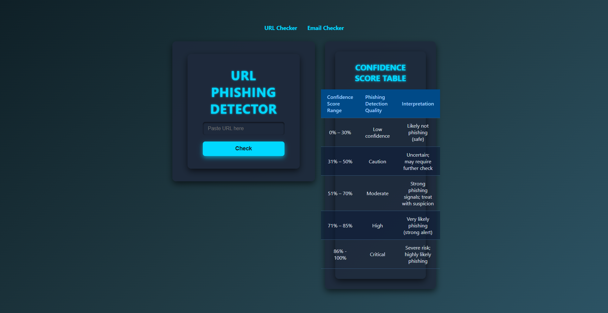

A full-stack web app to detect phishing URLs and emails with confidence scoring
The Phishing Detector is a modern web application designed to help users identify potential phishing threats in URLs and email content. It features a React front-end for a user-friendly interface and a Node.js back-end API that analyzes inputs and returns confidence levels of phishing likelihood.
The application supports switching between URL and email text analysis and visualizes results using a confidence table chart for clear risk interpretation. This project integrates secure communication between the front-end hosted on Vercel and the back-end deployed on Render.
Check out the Phishing-Detector app here.
URL Detection Mode
Email Detection Mode
Confidence Table Visualization
This project deepened my understanding of full-stack development by integrating a React front-end with a Node.js back-end. I gained experience with deploying apps on Vercel and Render, managing environment variables, and handling secure communication between client and server.
Additionally, I honed my skills in API design, asynchronous JavaScript, and data visualization techniques to clearly represent phishing confidence scores. This project also reinforced best practices in project organization, version control, and cloud deployment workflows.
← Back to Projects